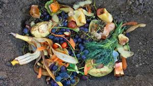

Tentang Kami

EcoGrow adalah pupuk organik dari limbah makanan yang diolah secara alami menjadi nutrisi berkualitas tinggi untuk tanaman.
Latar Belakang
Limbah makanan merupakan salah satu permasalahan lingkungan yang terus meningkat setiap tahunnya. Banyak sisa makanan yang tidak dimanfaatkan dan berakhir menjadi sampah yang mencemari lingkungan. Berdasarkan data Sistem Informasi Pengelolaan Sampah Nasional (SIPSN) 2024, proporsi sampah makanan pada timbulan sampah Indonesia mencapai 39,36% hingga 38,94%. Kajian Bappenas menunjukkan potensi susut dan sisa makanan mencapai 23–48 juta ton per tahun.
EcoGrow hadir sebagai solusi inovatif dengan mengolah limbah makanan menjadi pupuk organik yang bermanfaat bagi tanaman. Inovasi ini tidak hanya mengurangi jumlah limbah, tetapi juga membantu meningkatkan kesuburan tanah secara alami.
Selain itu, EcoGrow juga mendukung pencapaian Sustainable Development Goals (SDGs), khususnya:
- SDG 12 (Responsible Consumption and Production) – Mengurangi limbah makanan melalui pemanfaatan kembali menjadi pupuk.
- SDG 15 (Life on Land) – Menjaga kesuburan tanah dan ekosistem darat.
Kenapa Memilih EcoGrow?

EcoGrow membantu mengurangi limbah sekaligus meningkatkan kesuburan tanah. Kandungan organiknya memperbaiki struktur tanah, meningkatkan mikroorganisme, dan membantu tanaman tumbuh lebih optimal.
Kelebihan Kami:
Ramah Lingkungan
Mengurangi limbah makanan
Praktis
Mudah digunakan kapan saja
Hemat
Harga terjangkau
Beli Sekarang!
Jangan tunggu tanah menjadi tidak subur. Saatnya beralih ke solusi alami!
Beli Sekarang